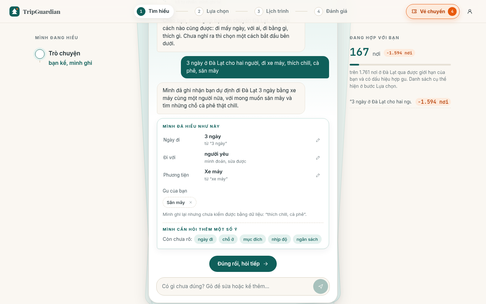
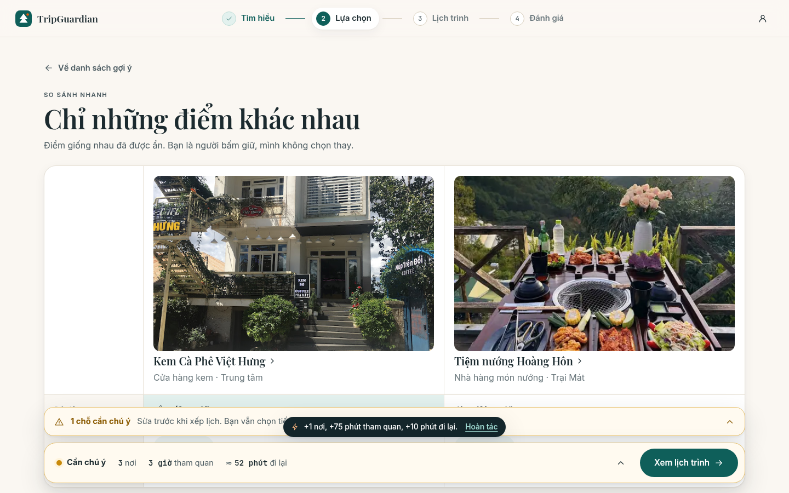
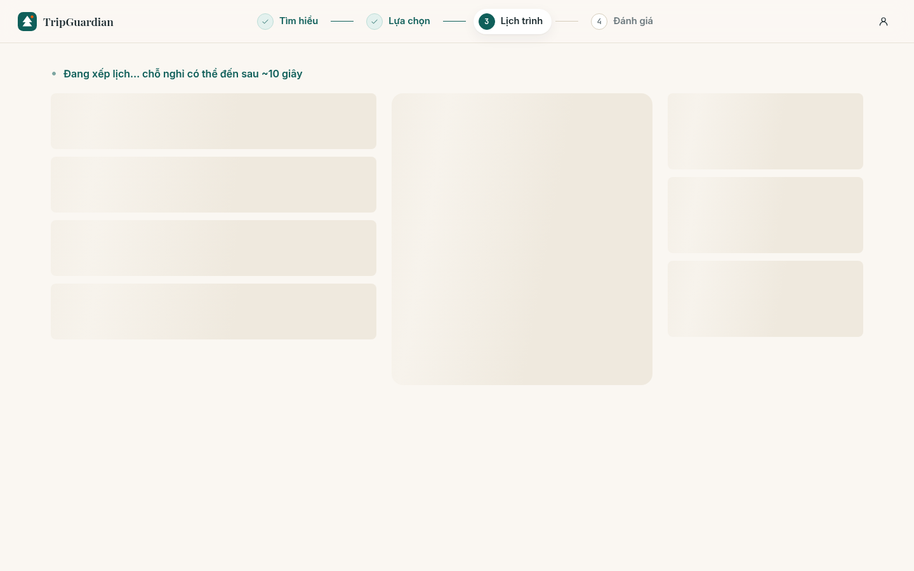

Google Maps
Tìm nơi → xem thông tin/review → lưu list → chỉ đường
Mạnh ở: định danh, vị trí, review và điều hướng.
Place intelligence · Đà Lạt
Bằng chứng có trạng thái. Ràng buộc có thể giải thích. Người dùng chốt cuối.
01 · Vấn đề
Khó nhất không phải tìm thêm địa điểm, mà là nhìn thấy đánh đổi về thời gian, di chuyển, giờ mở cửa và sức lực trước khi chốt.
02 · Bối cảnh Việt Nam
Nguồn: Traveloka × YouGov, APAC Travel Trends 2024 · gần 12.000 người, 9 thị trường
0303 · Công cụ hiện tại
Tìm nơi → xem thông tin/review → lưu list → chỉ đường
Mạnh ở: định danh, vị trí, review và điều hướng.
Tìm theo ngày → chọn/lọc → thanh toán → quản lý voucher
Mạnh ở: giá, booking và vận hành sau đặt.
Tạo chuyến → thêm nơi → xếp ngày → tối ưu route
Mạnh ở: lắp ráp lịch, map, cộng tác và budget.
Mô tả chuyến → gợi ý → lịch theo ngày → sửa/chia sẻ → booking
Mạnh ở: planning dựa trên review, giá và availability.
Nêu sở thích → lưu ý tưởng → dựng/chỉnh lịch → cộng tác → booking
Mạnh ở: AI travel end-to-end và map trong chuyến đi.
Nêu ngày/ngân sách → lịch dùng dữ liệu live → tinh chỉnh AI/chuyên gia → booking
Mạnh ở: AI planner kết hợp chuyên gia du lịch.
Luồng tóm tắt từ tài liệu chính thức, truy cập 09/10/2026 · link đầy đủ ở phụ lục
0404 · Định vị
Google Maps
Tripadvisor AI
Mindtrip · Layla
Google Maps
Wanderlog
Mindtrip
TripGuardian
Evidence state
Pass / fail / unknown
Wanderlog
Tripadvisor AI
Mindtrip · Layla
Traveloka
Google Maps
AI planners
TripGuardian đặt cược vào bước kiểm tra tập lựa chọn — trước khi lịch được sinh ra.
Đây là so sánh định vị từ tài liệu công khai, không phải benchmark chất lượng đối đầu.
0505 · Giá trị cốt lõi
Nơi nào phù hợp với chuyến đi này?
Vì sao chọn nơi này thay vì lựa chọn khác?
Các nơi đã chọn có thực sự đi cùng nhau được không?
Khác biệt được trình bày là thiết kế cơ chế; chưa phải bằng chứng TripGuardian tốt hơn đối thủ.
0606 · Trải nghiệm

Đầu vào tự nhiên Trip State có cấu trúc Người dùng xác nhận07 · Cơ chế quyết định
Ngày, người đi cùng, phương tiện, ngân sách, preference và hard constraint.
Fact, signal, estimate giữ nguồn, quote, freshness và trạng thái.
Đánh giá phù hợp, loại hard fail và giữ lý do cho từng lựa chọn.
Xếp lịch, kiểm tra thời gian/di chuyển và dừng khi không đủ điều kiện.
AI đề xuất và giải thích; rule, validator và người dùng giữ quyền chốt.
0808 · Dữ liệu & AI
Ví dụ: giờ mở cửa, địa chỉ, chính sách được gắn nguồn và thời điểm.
Review, video hoặc mô tả gần đây cho biết không khí và kiểu trải nghiệm.
Thời gian, chi phí hoặc mức phù hợp được ước lượng từ dữ liệu hiện có.
Place Intelligence ghi offline; luồng online chỉ đọc snapshot đã chuẩn hóa.
0909 · Tin cậy
Khung giờ ghé nằm trong giờ mở cửa đã xác minh.
Có đủ bằng chứng để cho lựa chọn đi tiếp.Nơi đóng lúc 17:00; sớm nhất có thể tới là 18:10.
Loại khỏi phương án chính; không để model “nới” giờ.Chưa có bằng chứng giờ mở cửa còn hiệu lực.
Không coi là mở; yêu cầu kiểm tra hoặc chọn phương án dự phòng.Physical constraint không có đường code nới; hard constraint fail-closed.
1010 · Kiến trúc
Chuẩn hóa nguồn, evidence state và feature.
Biến lời kể thành Trip State có cấu trúc.
Shortlist, lý do, hard-fail và phương án.
Xếp lịch và validate tổ hợp đã được chốt.
11 · Bằng chứng hiện tại
Snapshot serving · build 08/10/2026
30 Trip State mô phỏng offline · shortlist mục tiêu 8 nơi
Giới hạn: một kịch bản chưa đủ 8 nơi. Đây là pipeline evaluation trên dữ liệu serving, không phải thử nghiệm với 30 người dùng.
Nguồn nội bộ: data/serving/places.json và data/decision/eval.json
1212 · UX / demo


Fail-closed không phải ngõ cụt: giải thích điểm vướng → quay lại thay lựa chọn/constraint → validate lại.
1313 · Ranh giới bằng chứng
TripGuardian
Chốt địa điểm bằng evidence và constraint trước khi xếp lịch — với quyền quyết định cuối vẫn thuộc về người dùng.
Mời xem demo và phản biện cơ chế quyết định.
15A1 · Phụ lục